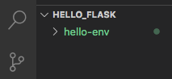

21.2. Install Flask¶
Note
If you are using Replit you do not need to install Flask or create a virtual environment.
Starting a new Flask project begins with the same basic steps. These are the housekeeping tasks we must complete before diving into our actual code.
In the sections below, you will complete the setup for your first Flask application.
Note
Several of the pages in this chapter include video summaries at the bottom of the page. The clips are intended to offer support. They do NOT serve as a replacement for the reading.
21.2.1. Create a Project Directory¶
Every application we develop should have its own directory on our machine. This allows us to keep our work organized and track each project with its own Git repository.
On your device, create a new directory called
flask_projects. Inside this folder, create a sub-directory calledhello_flask.Launch Visual Studio Code and open the
hello_flaskfolder.In the terminal pane, use the
pwdcommand to verify that you are in thehello_flaskdirectory.Use
git initto initialize a new repository.
21.2.2. Create a Virtual environment¶
To run a Flask application, we must create a virtual environment inside the project directory. Think of this like a collection of tools needed to make the application work.
Note
We won’t go into detail about why we need a virtual environment. For now, we just need to know how to set one up.
In the terminal, type the following command.
Mac Users: $ python3 -m venv hello-env Windows Users: $ py -3 -m venv hello-env
Be patient! The command takes some time to finish its work, and you won’t see much happen in the terminal while its running. The process is done when the terminal prompt (
$) reappears. Also, the folderhello-envshows up inside the project directory.The
hello-envdirectory contains the tools needed to make our web application run in our browser.¶The
venvkeyword creates a new Virtual ENVironment. In this case, the environment is calledhello-env.
Each Flask application you create will have its own virtual environment
directory. You can name these environments whatever you want, but a good
practice is to use something like project_name-env.
21.2.3. Add Flask¶
The next step is to activate the virtual environment. In the terminal, make sure you are in the
hello-flaskdirectory, then enter the command:Mac Users: $ . hello-env/bin/activate (hello-env) $ Windows Users: $ . hello-env/Scripts/activate (hello-env) $
(hello-env)now appears to the left of the terminal prompt. This indicates which virtual environment is currently active.Now install Flask with the command:
(hello-env) $ pip install Flask
Unlike
venv, this command produces LOTS of text in the terminal panel.Once the installation is done, check for success by using the command
flask --version.(hello-env) $ flask --version Python 3.9.5 Flask 2.0.1 Werkzeug 2.0.1
Note
Software updates occur frequently, so the version numbers you see might be slightly different. As long as you have a Python version at or above 3.6, you should be fine.
To exit an environment, just enter the command
deactivatein the terminal.(hello-env) $ deactivate $
21.2.4. Ready to Go!¶
OK, the virtual environment is set up, and Flask is installed. We can now add some Python code and link it to a webpage.
21.2.5. Video Summary¶
The clip below provides a walkthrough for installing Flask on a Macintosh computer. However, the process is very similar for other operating systems.